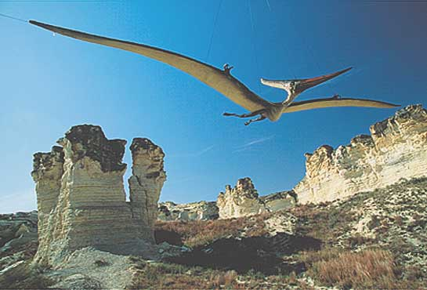
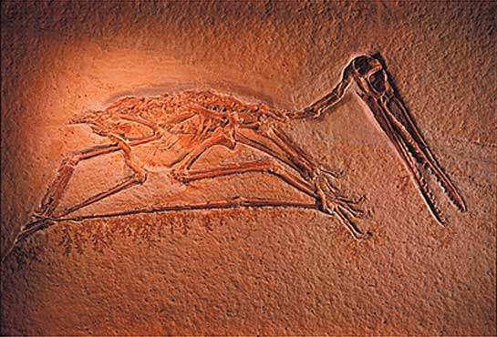

Flying by wires, a model of Pteranodon longiceps takes to
the
air over western Kansas. Remains of the species were
found in the Niobrara chalk, laid down about 85 million years ago
on
the floor of a broad sea way that covered
much of mid-continental North America. Fossils found in such
marine
deposits prove that some pterosaurs were
strong long-distance aviators. Some Pterosaurs had a
wingspan
as large as a modern F-16 jet fighter, yet would probably weigh no
more
than a person due to the hollow bones and a super lightweight
construction
ideal for soaring. National Geographic, May,
2001

Fossils of Pterosaurs have been found all over the world. Pterosaurs became extinct a the same time as the dinosaurs, but also like the dinosaurs they are one of evolution's great success stories, having thrived in many different sizes and locations throughout the world for 150 million years.
For more on Pterosaurs see the National Geographic site.